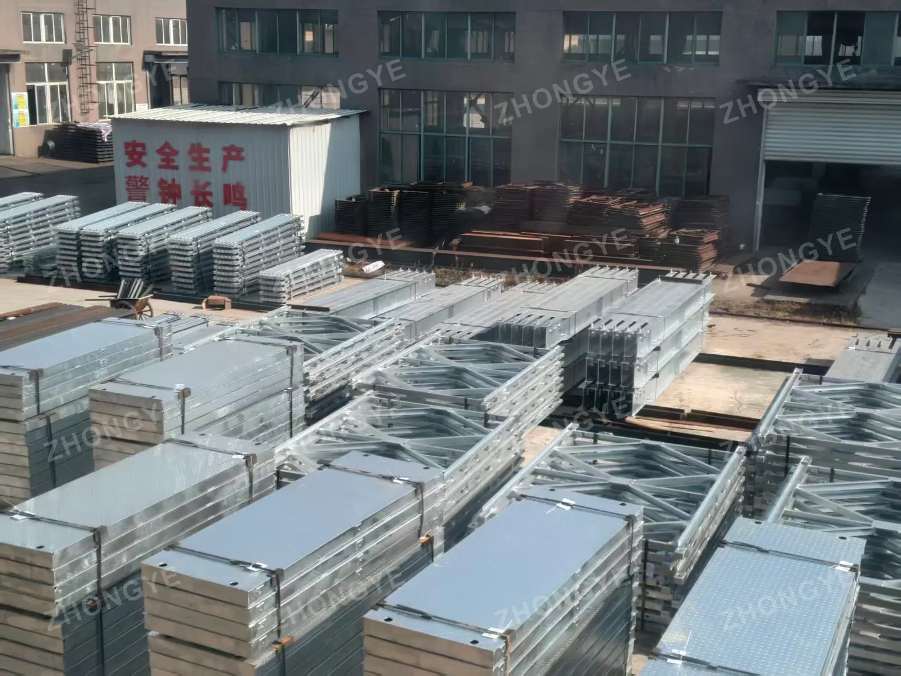
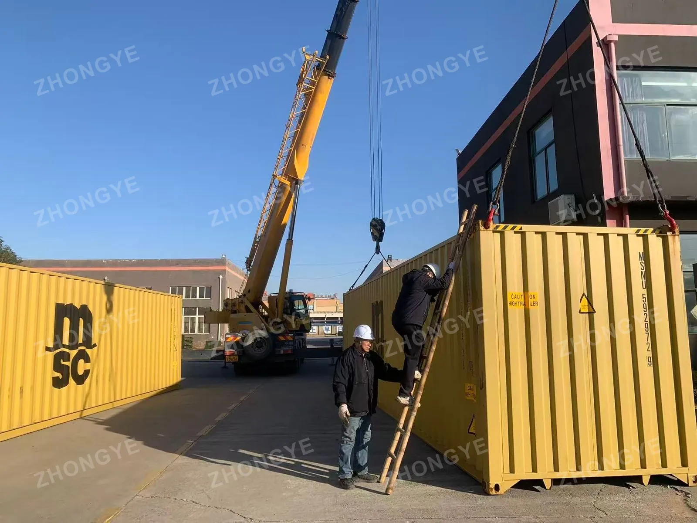
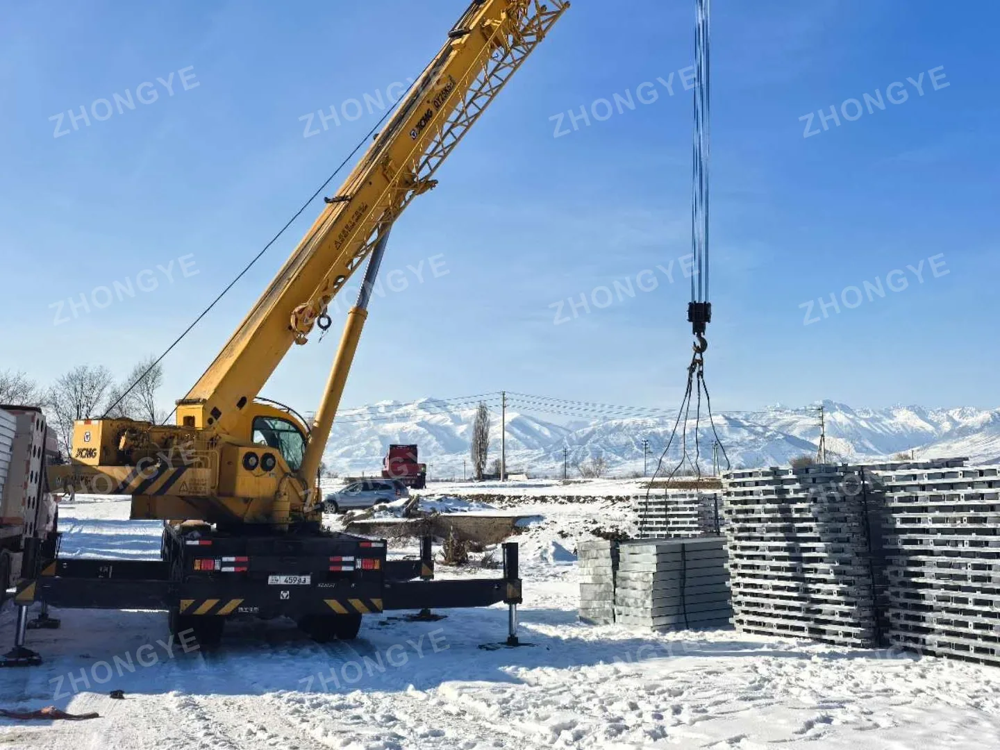
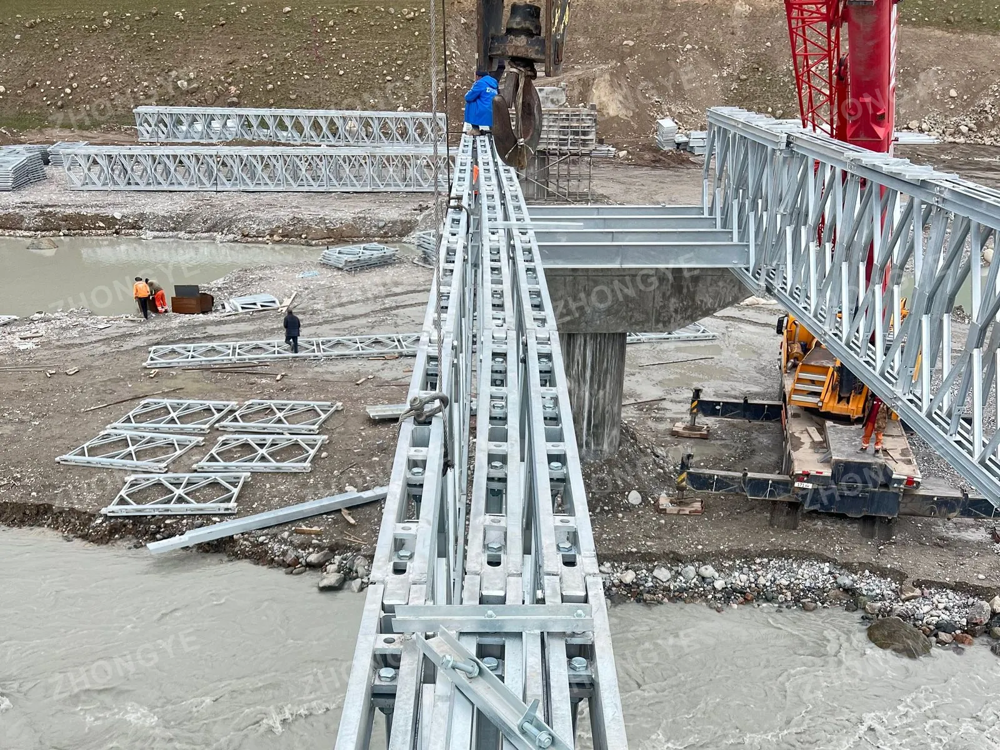
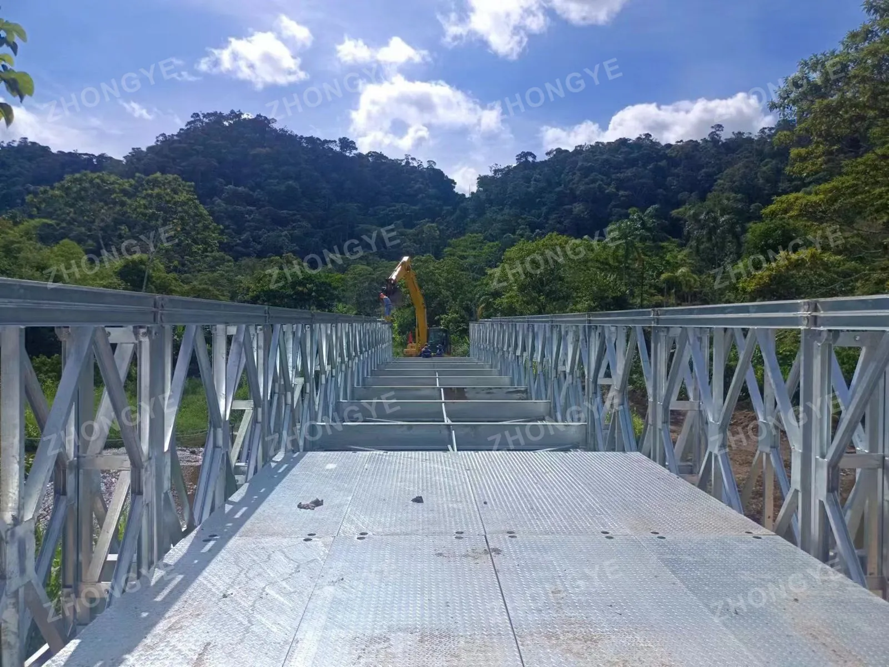
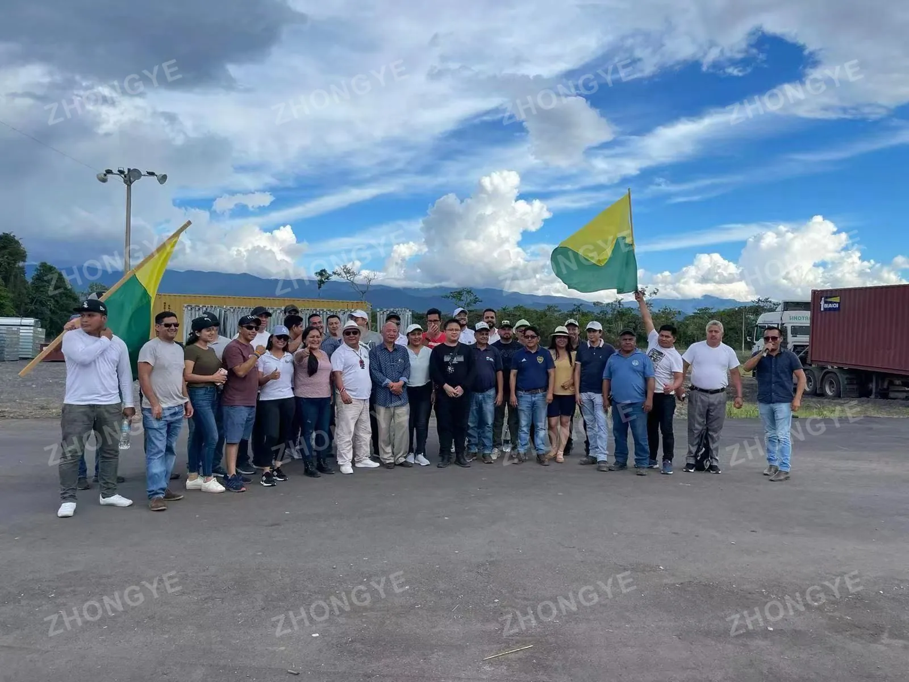
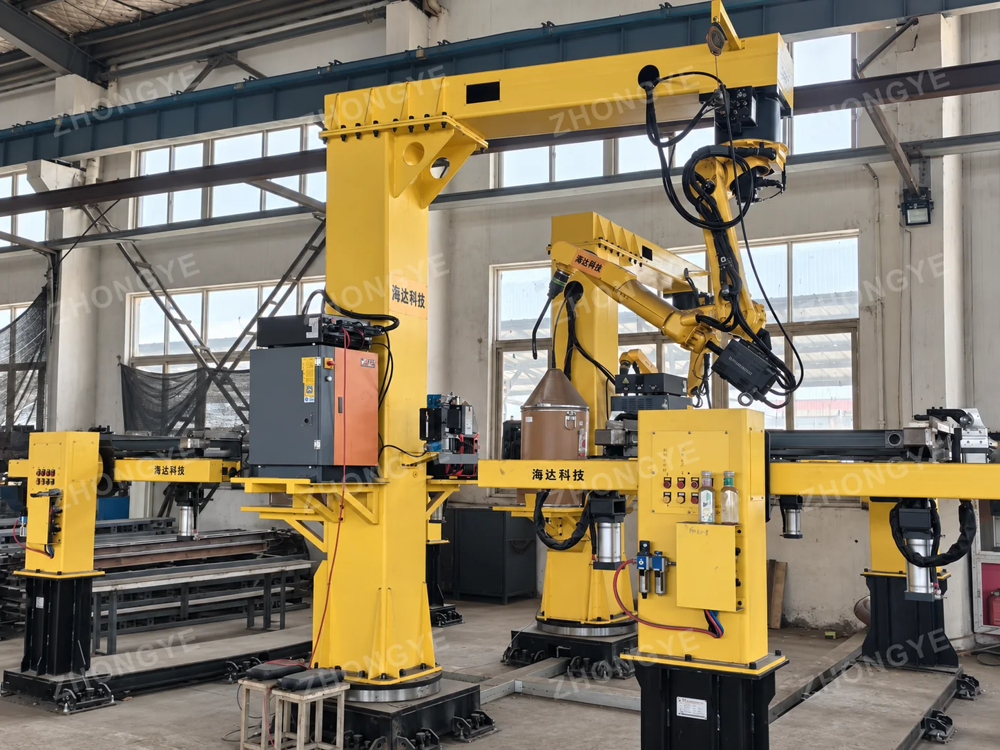
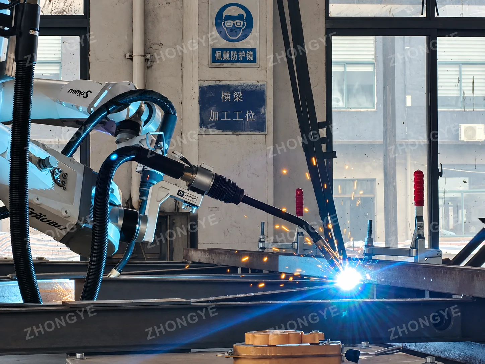

Modular steel bridge solutions, shaped by the requirements of each project.
SOUTHEAST ASIA
Indonesia.
01
Emergency Bridge Manufacturing
Bridges
45
Total Bridge Length
1,350m
Tonnes of Steel
Approximately2,000
Production Completed
WithinOne Month
Supporting emergency transport recovery after flooding, Zhongye completed production of 45 Type 321 modular steel bridges, each 30 metres long, within one month. The project demonstrates our ability to coordinate substantial manufacturing volumes and prepare bridge components for supply under a demanding schedule.

Factory stock of bridge components

Container loading and dispatch
CHINA
Tibet.
02
A 73m Single-Span D-Type Bridge Engineering Breakthrough
Single Span
73.152m
Overall Bridge Length
93.552m
Engineering Collaboration
University–Industry
Building on close collaboration with Jiangsu University, Zhongye worked with a specialist team on detailed engineering calculations for a D-type modular steel bridge with a 73.152-metre single span in a challenging high-altitude river gorge.
Zhongye’s scope: bridge-material supply, quality documentation, and technical training and guidance as required by the project.
Supply of two temporary steel bridges for a project in Kyrgyzstan.

Bridge components and material handling at the project site

Additional project photograph
SOUTH AMERICA
Ecuador.
27 Type 200 Modular Steel Bridges
Supply of 27 Type 200 modular steel bridges for a project in Ecuador.

Bridge components and material handling

Additional project photograph
02 / MANUFACTURING
The Manufacturing Behind Our Bridge Solutions
01
Robotic Welding
Four automatic welding robots support repeatable fabrication of modular bridge components.
02
Coordinated Production
Cutting, punching, drilling, welding and material-handling resources support coordinated component manufacturing and preparation for shipment.
03
Quality Inspection
Weld inspection, coating-thickness measurement and dimensional checks support production quality control.

Robotic welding equipment

Robotic welding of steel bridge components
03 / LET’S CONNECT
Talk to Zhongye. Visit Our Factory.
Discuss your bridge requirements directly with us, or arrange a visit to see our manufacturing facilities in Zhenjiang, China. We welcome customers to visit—contact us to coordinate a convenient time.